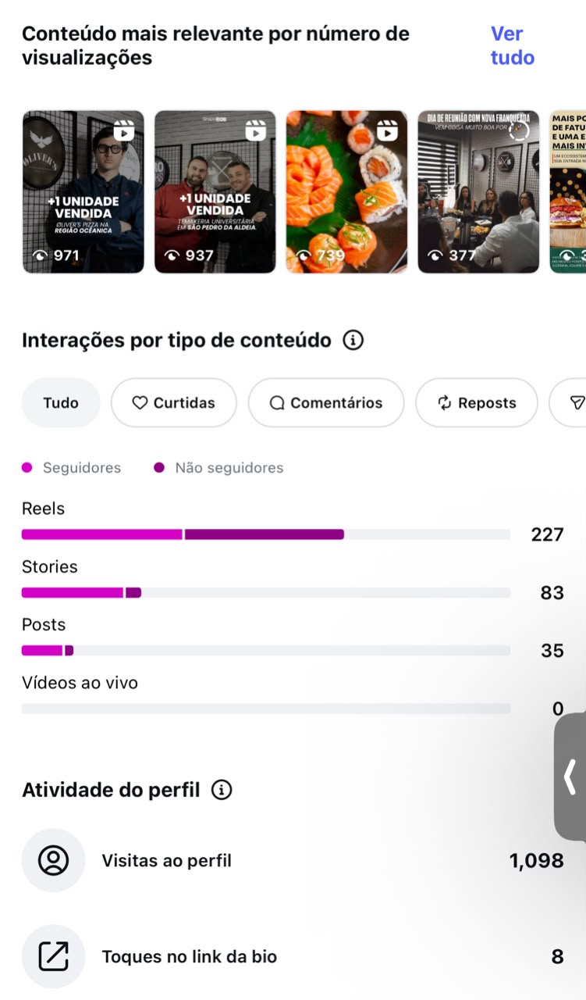
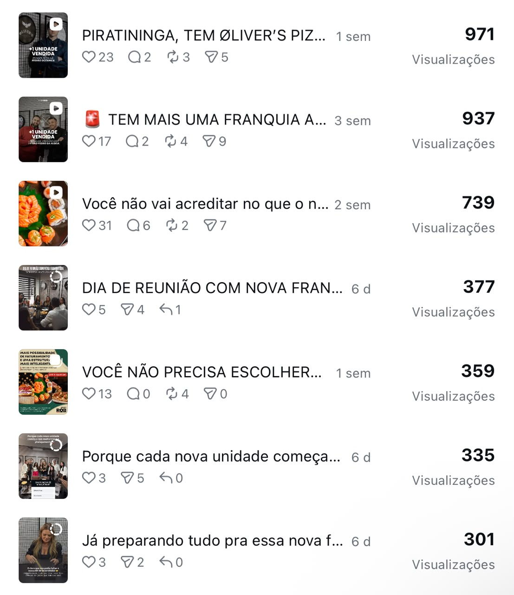

Grupo ROB Food · Instagram
Consolidado de expansão, franquias e métricas. Setembro/2026, últimos 30 dias.
Os vídeos de expansão e de novas unidades lideraram as visualizações e o engajamento com potenciais investidores e com o público local.
Acompanhamento diário dos bastidores de reuniões e aberturas, mantendo parceiros e público engajados.
Conteúdos mais relevantes por visualizações, interações por formato e atividade do perfil, Instagram Insights.


A estratégia equilibra a atração corporativa de novos franqueados com o apetite do consumidor final pelas marcas do grupo.
Marcos de novas unidades estruturados para demonstrar solidez, lucratividade e expansão acelerada no mercado.
Humanização dos processos corporativos, mostrando o suporte dedicado aos franqueados e o dia a dia da gestão.
Close-ups de pratos e combos que despertam desejo imediato e fortalecem o posicionamento das marcas do grupo.
Acompanhamento diário para manter o ecossistema de negócios conectado e transparente. Estamos atacando com uma nova estratégia de caixinhas de perguntas e respostas, pra sanar dúvidas de possíveis franqueados e incentivar a informação sobre o Grupo ROB, passando conhecimento de como funciona a estrutura. Na comunidade engajada, as interações focam bastante em conteúdos de bastidores, quando contamos a história por trás das marcas e fazemos as collabs. Ainda estamos fracos de interação nos conteúdos gerais, mas estamos trabalhando nisso, trazendo outros tipos de conteúdo orgânico com outras abordagens pra melhorar esse crescimento do perfil.
Setembro consolidou o Grupo ROB como uma holding de referência em expansão e gestão gastronômica na região.
Já estamos trabalhando em novos criativos alinhados à comunicação e à abordagem para franqueados. Estamos renovando as peças de topo, meio e fundo de funil, tanto em vídeo quanto em estáticos, para abastecer a campanha.
Ampliar anúncios de novas unidades e parcerias estratégicas para atrair novos franqueados.
Investir em mais carrosséis detalhando o modelo de negócio das franquias.
Aliar tendências do Instagram ao dia a dia corporativo e ao suporte às unidades do Grupo ROB.